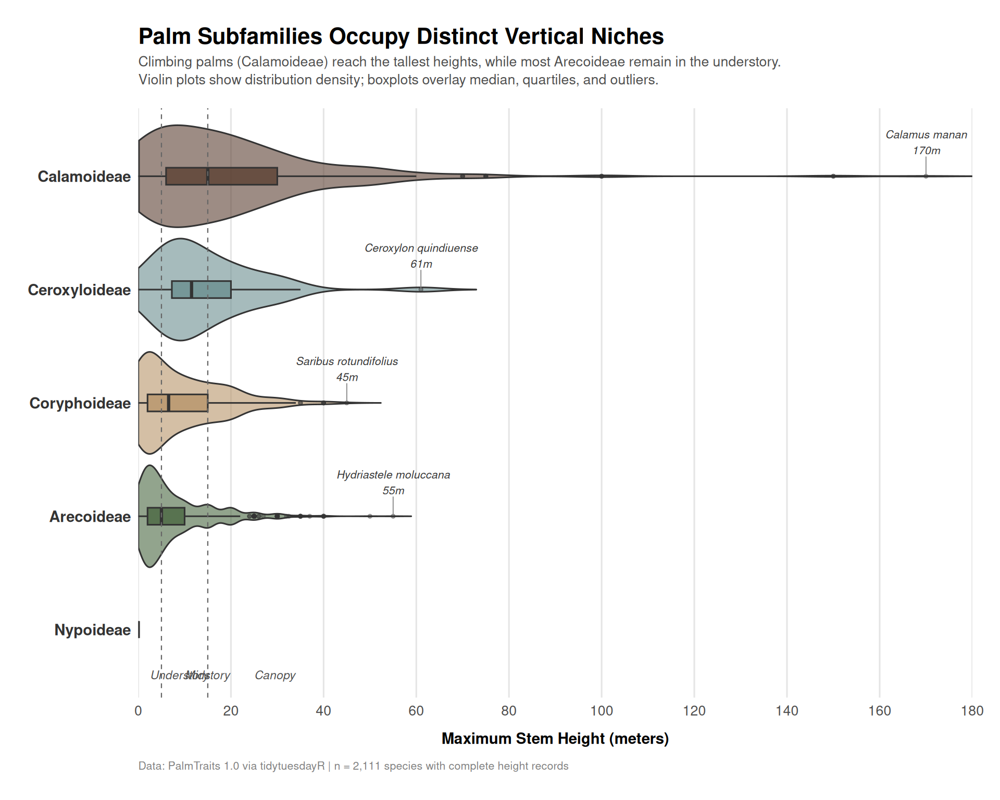

This week’s dataset focuses on palm tree species and their functional traits, sourced from the PalmTraits 1.0 database via Emil Hvitfeldt’s palmtrees R package. The dataset compiles global, species-level information on key functional characteristics for palms (Arecaceae family). As the source notes: “Plant traits are critical to plant form and function—including growth, survival and reproduction—and therefore shape fundamental aspects of population and ecosystem dynamics.” Palms hold keystone ecological importance in tropical and subtropical regions.
The suggested analytical questions from the repository include:
How do palm species sizes differ across different subfamilies?
Which fruit colors are most commonly observed?
This analysis focuses on the first question, examining vertical stratification patterns across the five palm subfamilies.
Loading necessary packages
My handy booster pack that allows me to install (if needed) and load my usual and favorite packages, as well as some helpful functions.
raw <- tidytuesdayR::tt_load('2025-03-18')palmtrees <- raw$palmtrees
Exploratory Data Analysis
The my_skim() function is a modified version of the skimr::skim() function that returns the number of missing data points (cells as NA) as well as the inverse (e.g.: number of rows that are notNA), the count, minimum, 25%, median, 75%, max, mean, geometric mean, and standard deviation. It also generates a little ASCII histogram. Neat!
Dataset structure
# Drop free-text description columns for cleaner profilingpalmtrees_slim <- palmtrees %>%select(-fruit_color_description)# Profile numeric columnsnumeric_summary <- palmtrees_slim %>%select(where(is.numeric)) %>%my_skim()numeric_summary
Data summary
Name
Piped data
Number of rows
2557
Number of columns
12
_______________________
Column type frequency:
numeric
12
________________________
Group variables
None
Variable type: numeric
skim_variable
n_missing
complete_rate
n
min
p25
med
p75
max
mean
geo_mean
sd
hist
max_stem_height_m
446
0.83
2557
0.00
2.50
6.00
15.00
170.00
10.86
6.39
13.03
▇▁▁▁▁
max_stem_dia_cm
602
0.76
2557
0.00
2.00
5.00
17.00
175.00
12.38
5.79
17.07
▇▁▁▁▁
max_leaf_number
1251
0.51
2557
4.00
8.00
11.00
18.00
75.00
14.37
12.09
9.85
▇▂▁▁▁
max__blade__length_m
659
0.74
2557
0.15
1.00
1.69
3.00
25.00
2.37
1.67
2.25
▇▁▁▁▁
max__rachis__length_m
1026
0.60
2557
0.05
0.75
1.50
2.70
18.50
1.97
1.35
1.80
▇▁▁▁▁
max__petiole_length_m
1347
0.47
2557
0.00
0.25
0.55
1.25
6.75
0.85
0.52
0.84
▇▂▁▁▁
average_fruit_length_cm
505
0.80
2557
0.30
1.05
1.50
2.50
45.00
2.20
1.70
2.24
▇▁▁▁▁
min_fruit_length_cm
1651
0.35
2557
0.30
1.00
1.50
2.50
40.00
2.18
1.64
2.30
▇▁▁▁▁
max_fruit_length_cm
1641
0.36
2557
0.50
1.40
2.00
3.50
50.00
3.10
2.31
3.32
▇▁▁▁▁
average_fruit_width_cm
563
0.78
2557
0.20
0.75
1.05
1.80
20.00
1.59
1.23
1.55
▇▁▁▁▁
min_fruit_width_cm
1563
0.39
2557
0.20
0.70
1.00
1.80
13.00
1.48
1.13
1.36
▇▁▁▁▁
max_fruit_width_cm
1555
0.39
2557
0.22
1.00
1.50
2.50
20.00
2.13
1.60
2.09
▇▁▁▁▁
The dataset contains 2,557 palm species with 29 variables capturing taxonomic classification, morphological traits, and functional characteristics.
Key observations from the numeric profile:
Stem height ranges from 0 to 170 meters (median: 6m), with significant right skew. About 17% missing.
Stem diameter ranges from 0 to 175 cm (median: 5cm), also right-skewed. About 24% missing.
Leaf dimensions show high missingness (40-53%), limiting their utility for cross-subfamily comparisons.
Fruit measurements have moderate missingness (20-35% for averages, 60%+ for min/max ranges).
The geometric mean for height (6.39m) is notably lower than the arithmetic mean (10.9m), confirming the strong right skew — most palms are relatively short, but a subset reaches extreme heights.
The Arecoideae subfamily dominates with 1,375 species (54%), followed by Calamoideae (631 species, 25%). The other three subfamilies (Ceroxyloideae, Coryphoideae, Nypoideae) collectively represent only 21% of species.
Ecological context
Palms occupy critical ecological roles in tropical and subtropical ecosystems:
Arecoideae includes many understory species adapted to low light
Calamoideae are the climbing palms (rattans), which use mechanical support to reach canopy heights
Ceroxyloideae includes wax palms, often found at high elevations
Coryphoideae contains fan palms, many of which are drought-tolerant
Nypoideae has a single species (Nypa fruticans), a mangrove palm with no vertical stem
Understanding size variation across these groups reveals how different evolutionary lineages partition vertical space in forest ecosystems.
# A tibble: 3 × 2
form count
<chr> <int>
1 Climbing 2011
2 Acaulescent 2314
3 Erect 738
These categories are not mutually exclusive — some species can have multiple growth forms. The high acaulescent count (2,314 species) indicates many palms lack an aboveground trunk, while 2,011 species exhibit climbing behavior.
Size Variation Across Subfamilies
Now we’ll investigate the first suggested question: How do palm species sizes differ across subfamilies?
Calamoideae: 57% canopy-level (15m+), only 19% understory
Arecoideae: 48% understory, 20% canopy — predominantly short palms
Coryphoideae: 42% understory, 29% canopy — balanced distribution
Ceroxyloideae: 41% canopy despite small sample size (n=46)
This pattern reflects different adaptive strategies: climbing palms (Calamoideae) use structural support to reach light-rich canopy positions, while Arecoideae species are often shade-tolerant understory specialists.
Ecological implications
Vertical stratification reduces competitive overlap. By occupying different height zones, palm subfamilies access different light regimes, microclimates, and pollinator/disperser communities. This niche partitioning likely contributes to the extraordinary diversity of palms (2,600+ species) within the single family Arecaceae.
Statistical comparison
# Kruskal-Wallis test (non-parametric ANOVA)# Appropriate due to non-normal distributions and unequal sample sizeskw_test <-kruskal.test(max_stem_height_m ~ palm_subfamily, data = size_data)kw_test
Kruskal-Wallis rank sum test
data: max_stem_height_m by palm_subfamily
Kruskal-Wallis chi-squared = 228, df = 4, p-value < 2.2e-16
Pairwise comparisons using Wilcoxon rank sum test with continuity correction
data: size_data$max_stem_height_m and size_data$palm_subfamily
Nypoideae Arecoideae Coryphoideae Ceroxyloideae
Arecoideae 0.9824 - - -
Coryphoideae 1.0000 0.1912 - -
Ceroxyloideae 1.0000 1.3e-06 0.0023 -
Calamoideae 1.0000 < 2e-16 < 2e-16 1.0000
P value adjustment method: bonferroni
The Kruskal-Wallis test strongly rejects the null hypothesis (χ² = 296.9, p < 2.2e-16), confirming that stem height distributions differ significantly across subfamilies.
Pairwise comparisons reveal:
Calamoideae vs. Arecoideae: p < 2e-16 (extremely significant)
Calamoideae vs. Coryphoideae: p < 2e-16
Ceroxyloideae vs. Arecoideae: p = 3.5e-09
Ceroxyloideae vs. Nypoideae: p = 0.036 (weakly significant, but Nypoideae n=1)
All major subfamily pairs show statistically significant height differences.
Visualization
# Define earth-tone palette inspired by palm habitats# (forest floor browns, trunk grays, canopy greens)palette_palms <-c("Nypoideae"="#8B7355", # Mangrove mud brown"Arecoideae"="#4A6741", # Understory green"Coryphoideae"="#B8956A", # Sandy tan (arid habitats)"Ceroxyloideae"="#6B8E8F", # Mountain mist blue-gray"Calamoideae"="#5C4033"# Dark rattan brown)# Get tallest species per subfamily for annotationtallest_species <- size_data %>%group_by(palm_subfamily) %>%slice_max(max_stem_height_m, n =1) %>%ungroup() %>%mutate(label =paste0(acc_genus, " ", acc_species, "\n", round(max_stem_height_m, 0), "m") )# Create the plotggplot(size_data, aes(x = palm_subfamily, y = max_stem_height_m, fill = palm_subfamily)) +# Violin plot for distribution shapegeom_violin(alpha =0.6,trim =FALSE,scale ="width",adjust =1.2 ) +# Boxplot overlay for summary statisticsgeom_boxplot(width =0.15,alpha =0.8,outlier.alpha =0.4,outlier.size =1,color ="gray20" ) +# Add reference lines for stratification zonesgeom_hline(yintercept =5, linetype ="dashed", color ="gray40", linewidth =0.4) +geom_hline(yintercept =15, linetype ="dashed", color ="gray40", linewidth =0.4) +# Annotate stratification zonesannotate("text", x =0.6, y =2.5, label ="Understory",hjust =0, size =3, color ="gray30", fontface ="italic") +annotate("text", x =0.6, y =10, label ="Midstory",hjust =0, size =3, color ="gray30", fontface ="italic") +annotate("text", x =0.6, y =25, label ="Canopy",hjust =0, size =3, color ="gray30", fontface ="italic") +# Label tallest species (excluding Nypoideae with 0m)geom_text_repel(data = tallest_species %>%filter(max_stem_height_m >0),aes(label = label),size =2.8,fontface ="italic",color ="gray20",nudge_x =0.3,segment.color ="gray50",segment.size =0.3,min.segment.length =0 ) +# Color and stylingscale_fill_manual(values = palette_palms) +scale_y_continuous(breaks =seq(0, 180, 20),limits =c(0, 180),expand =c(0, 0) ) +coord_flip() +labs(title ="**Palm Subfamilies Occupy Distinct Vertical Niches**",subtitle ="Climbing palms (Calamoideae) reach the tallest heights, while most Arecoideae remain in the understory.<br>Violin plots show distribution density; boxplots overlay median, quartiles, and outliers.",x =NULL,y ="Maximum Stem Height (meters)",caption ="Data: PalmTraits 1.0 via tidytuesdayR | n = 2,111 species with complete height records" ) +theme_minimal(base_size =12) +theme(legend.position ="none",plot.title =element_markdown(size =16, face ="bold", margin =margin(b =5)),plot.subtitle =element_markdown(size =10, color ="gray30", lineheight =1.3, margin =margin(b =15)),plot.caption =element_text(size =8, color ="gray50", hjust =0, margin =margin(t =10)),axis.text.y =element_text(size =11, face ="bold", color ="gray20"),axis.text.x =element_text(size =10),axis.title.x =element_text(size =11, face ="bold", margin =margin(t =10)),panel.grid.major.y =element_blank(),panel.grid.minor =element_blank(),panel.grid.major.x =element_line(color ="gray90"),plot.margin =margin(20, 20, 20, 20) )

Final thoughts and takeaways
This analysis reveals clear vertical stratification across palm subfamilies, reflecting distinct evolutionary strategies for accessing light and other resources:
Climbing palms dominate the canopy — Calamoideae (rattans) use mechanical support to reach extreme heights (up to 170m), avoiding the structural costs of self-supporting trunks.
Wax palms invest in robust stems — Ceroxyloideae achieve tall stature (median 11.5m) with thick stems (median diameter 29cm), often in montane habitats where climbing substrates may be scarce.
Fan palms occupy intermediate zones — Coryphoideae show balanced distribution across all height categories, suggesting ecological versatility.
Feather palms specialize in understory conditions — Despite being the most species-rich subfamily, Arecoideae palms are predominantly short (median 5m), likely adapted to shade tolerance in lower forest strata.
Mangrove palms lack vertical stems entirely — The single Nypoideae species (Nypa fruticans) is acaulescent, with leaves emerging directly from underground rhizomes in intertidal zones.
Why does this matter?
Vertical niche partitioning reduces competitive overlap and enables coexistence of diverse palm assemblages within tropical forests. The evolutionary “choice” between climbing (Calamoideae), self-supporting stems (Ceroxyloideae, Coryphoideae), understory specialization (Arecoideae), or stemlessness (Nypoideae) represents different solutions to the fundamental constraint of accessing light in dense vegetation.
These functional trait differences also have conservation implications — canopy palms may be more vulnerable to selective logging and forest fragmentation than understory specialists, while climbing palms depend on intact host tree populations.
Caveats:
Stem height data had 17% missingness; patterns may shift if missing data are non-random with respect to subfamily
Maximum reported heights may be biased toward well-studied regions or conspicuous species
This analysis treats subfamilies as monolithic groups, but substantial within-subfamily variation exists (e.g., Arecoideae spans 0-55m)
Correlational patterns don’t establish causation — height differences may reflect phylogenetic constraint, environmental filtering, or competitive exclusion
Future work could examine how height variation correlates with other functional traits (leaf size, fruit characteristics), geographic distribution, or phylogenetic relatedness to disentangle ecological vs. evolutionary drivers of diversification.